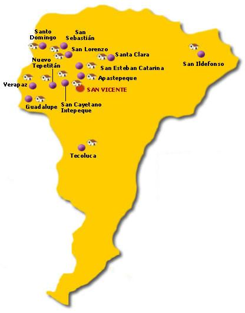

San Vicente es la ciudad cabecera del municipio y departamento homónimos en El Salvador. Fue fundada en el año 1635 y llegó a ser capital de la república en el siglo XIX. Durante la colonización española, fue una de las localidades más importantes de la Intendencia de San Salvador. San Vicente es uno de los catorce departamentos que conforman la República de El Salvador, en la región Paracentral. La ciudad cabecera es San Vicente. El departamento fue creado, el 12 de junio de 1824 y funcionó como capital de El Salvador de 1834 a 1840. Al ser establecido comprendía también, el territorio de los actuales departamentos de Cabañas y La Paz. Entre los monumentos artísticos hay que señalar la iglesia colonial de Nuestra Señora del Pilar, de estilo barroco, construida hacia 1760, frente a la plaza del mismo nombre, La Torre de San Vicente, ubicada en el parque central frente Catedral y el santuario. Sus Fiestas patronales se celebran del 11 de diciembre al 31 del mismo mes en honor a san Vicente de Austria y Lorenzana.
El departamento pertenece a la zona central de la república. Está limitado por los siguientes departamentos: al Norte, por cabañas, al Este, por San Miguel y Usulután, al Sur, por Usulutan. La Paz y el Océano Pacífico al Oeste, por la paz y cuscatlan. Se localiza entre las coordenadas geográficas siguientes: 13º48'04LN. (Extremo septentrional), 13º14'39LN.(extremo meridional);88º29'05LWG. (Extremo oriental) y 88º54'0LWG. (Extremo occidental).
Su principal rubro económico lo constituye la industria del azúcar, para lo cual cuenta con el ingenio jiboa, que genera empleo a muchas personas, tanto en la fase industrial, como en la agrícola. el ingenio mantiene una capacidad de recepción de 4100toneladas métricas de caña cortada diarias; cuenta con cuatro molinos de 40 pulgadas de diámetro y 84 pulgadas de largo; el bagazo que sale del último molino se emplea para la generación del vapor. Dentro del área de producción se puede mencionar las cantidades de azúcar y melaza que se produce, además de áreas cafetaleras alrededor de las faldas del volcán.